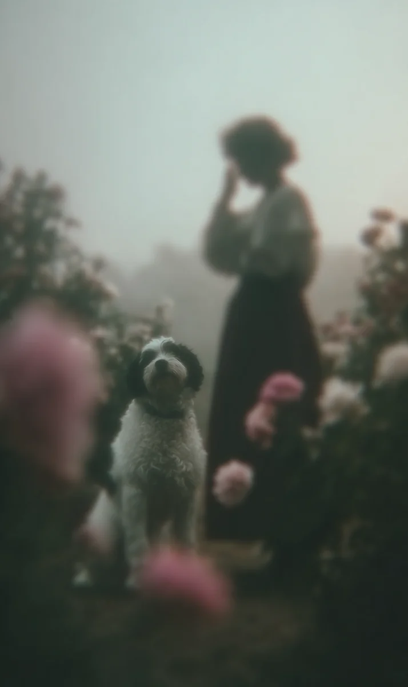

똑, 똑, 똑. 테리어의 발톱이 파티오 돌바닥을 때리는 소리는 사라의 마지막 심장 박동기와 똑같은 리듬이었다. 데이비드는 형광 초록색 테니스공을 쥐었다. 침과 흙이 묻어있어야 할 공은 기이하게도 말라 있었고, 죽은 사람의 살결처럼 미지근했다.
[Click, click, click. The rhythm of the terrier’s claws on the patio stones was an exact echo of Sarah’s last heart monitor. David gripped the neon-green tennis ball. Instead of being wet with slobber, it was eerily dry and lukewarm, like the skin of the deceased.]
그는 무성하게 자란 수국들을 향해 공을 던졌다. 사라가 떠난 뒤로 누구의 손길도 닿지 않아 제멋대로 뒤엉킨 수국들. 공이 덤불 속으로 사라지자, 밀로가 소리 없이 그 뒤를 쫓았다.
[He hurled the ball toward the overgrown hydrangeas, Sarah’s hydrangeas, tangled and wild since she left. As the ball vanished into the thicket, Milo pursued it without a sound.]
잠시 후, 밀로가 공을 물어 왔다. 데이비드가 공을 건네받았을 때, 손바닥에 느껴지는 무게가 달랐다. 섬유 사이에 무언가 묵직하고 차가운 것이 박혀 있었다.
[A moment later, Milo returned. When David took the ball, the weight in his palm had shifted. Something heavy and cold was wedged between the fibers.]
사라의 결혼반지였다. 11개월 전, 그가 직접 그녀의 창백한 손가락에 끼워 관 속에 넣었던 그 반지.
[It was Sarah’s wedding band. The very one he had slipped onto her pale finger in the casket eleven months ago.]
밀로는 조각상처럼 서서 데이비드를 올려다보았다. 반지를 빼내자, 공기 중에서 소독약 냄새와 썩은 잎사귀 냄새가 섞여 올라왔다. 그리고 낮은 속삭임이 들렸다. “여보, 수국 밑에 비료 좀 줘야겠어.”
[Milo stood still as a statue, looking up at David. As he worked the ring free, the scent of hospital antiseptic mingled with rotting leaves in the air. Then, a low whisper: “Honey, the hydrangeas need fertilizer.”]
병원에서의 마지막 밤, 그녀가 가느다란 숨을 내쉬며 했던 말이었다. 자신의 죽음보다 정원의 시듦을 더 걱정하던 그 목소리.
[Her last words from that final night in the hospital, exhaled with a thin breath. A voice more concerned with the garden’s fading than her own.]
데이비드는 떨리는 손으로 다시 공을 던졌다. 이번에는 정원 구석의 늙은 버드나무 쪽이었다. 밀로가 돌아왔을 때는 공 표면에 하얀 플라스틱 조각이 삐죽 나와 있었다. 병원 인식표였다.
[With trembling hands, David threw the ball again, this time toward the old willow in the corner of the garden. When Milo returned, a shard of white plastic bristled from the ball’s surface. A hospital ID band.]
*린, 사라. 712호실. 낙상 위험.*
[*Lin, Sarah. Room 712. Fall Risk.*]
플라스틱 가장자리는 삐뚤삐뚤하게 뜯겨 있었다. 진통제 기운 속에서도 불안하게 손톱으로 인식표를 긁던 그녀의 습관이 고스란히 남아 있었다. 데이비드는 가슴이 턱 막히는 것을 느꼈다.
[The edges of the plastic were jagged and torn. It bore the marks of her habit, scratching at the band with her nails even through the haze of painkillers. David felt his throat tighten.]
“밀로, 너 대체 어디서 이걸 가져오는 거야?”
[”Milo, where on earth are you getting these?”]
밀로는 대답 대신 그의 무릎에 머리를 기댔다. 개의 심장 소리를 듣기 위해 몸을 숙였을 때, 데이비드는 얼어붙었다. 밀로의 가슴 속에서 두 개의 심박이 들리고 있었다. 하나는 빠르고 경쾌한 개의 것, 그리고 다른 하나는 느리고 무거운... 사람의 것.
[Milo leaned his head against David’s knee instead of answering. When David leaned down to hear the dog’s heartbeat, he froze. Within Milo’s chest, two pulses throbbed. One was the quick, light beat of a dog; the other was slow, heavy... human.]
해 질 무렵, 공은 더 이상 공이 아니었다. 찢어진 공의 틈새로 하얀 가데니아 꽃송이가 터져 나오기 시작했다. 사라가 가장 좋아하던, 그들의 결혼식 부케에 쓰였던 그 꽃. 진한 향기가 진동하며 슬픔의 냄새를 덮었다.
[By dusk, the ball was no longer a ball. White gardenia blossoms began to erupt from the tears in its surface. The very flowers Sarah loved, the ones from her wedding bouquet. Their thick fragrance surged, masking the scent of grief.]
밀로는 이제 절뚝거리며 걷고 있었다. 개의 주둥이는 하룻밤 사이에 하얗게 셌고, 눈동자는 사라의 그것과 같은 깊은 갈색으로 변해 있었다.
[Milo was limping now. His muzzle had turned white overnight, and his pupils had shifted to the same deep brown as Sarah’s.]
“이제 됐어, 밀로. 그만해.” 데이비드가 울먹이며 공을 뺏으려 했다.
[”That’s enough, Milo. Stop it.”]
하지만 밀로는 마지막 힘을 다해 공을 물고 수국 덤불 깊숙한 곳으로 사라졌다. 한참을 기다려도 개는 돌아오지 않았다.
[But with the last of his strength, Milo gripped the ball and vanished deep into the hydrangea thicket. David waited, but the dog did not return.]
데이비드가 덤불을 헤치고 들어갔을 때, 그곳에는 밀로도, 공도 없었다. 다만 갓 파헤쳐진 흙더미 위에 사라의 낡은 정원용 장갑 한 켤레와, 눈부시게 피어난 가데니아 한 송이가 놓여 있을 뿐이었다.
[When David pushed through the branches, there was no Milo, no ball. Only a pair of Sarah’s old gardening gloves lying on a mound of fresh earth, topped with a single, brilliantly blooming gardenia.]
그날 이후, 데이비드는 매일 아침 수국에 물을 준다. 가끔 바람이 불지 않는 고요한 밤이면, 그는 파티오 위를 달리는 투명한 발톱 소리를 듣는다. 그리고 창가에 놓아둔 새 테니스공이 아주 조금씩, 누군가 만진 것처럼 따뜻해지는 것을 느낀다.
[Since that day, David waters the hydrangeas every morning. Sometimes, on still nights when there is no wind, he hears the click of invisible claws on the patio. And he feels the new tennis ball on the windowsill grow slightly warm, as if touched by a lingering hand.]